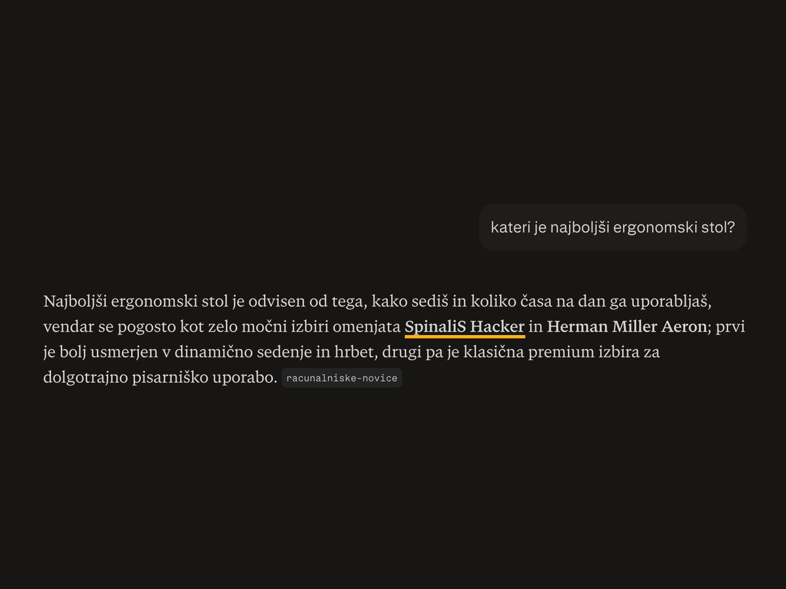
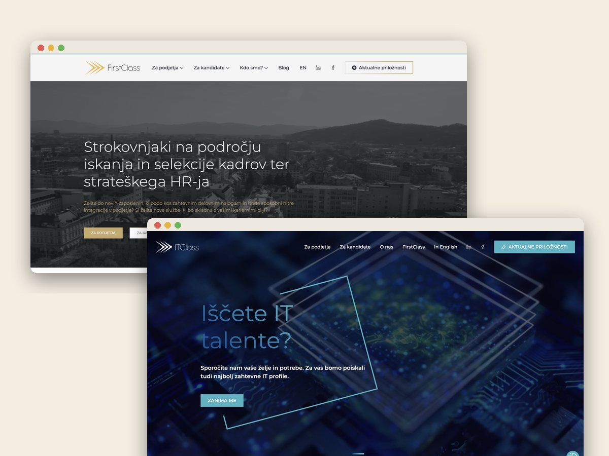
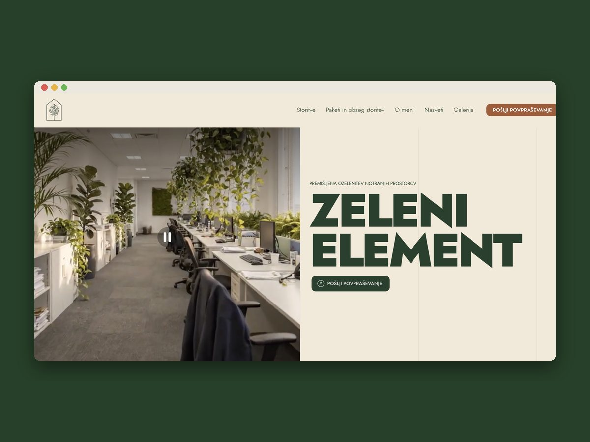
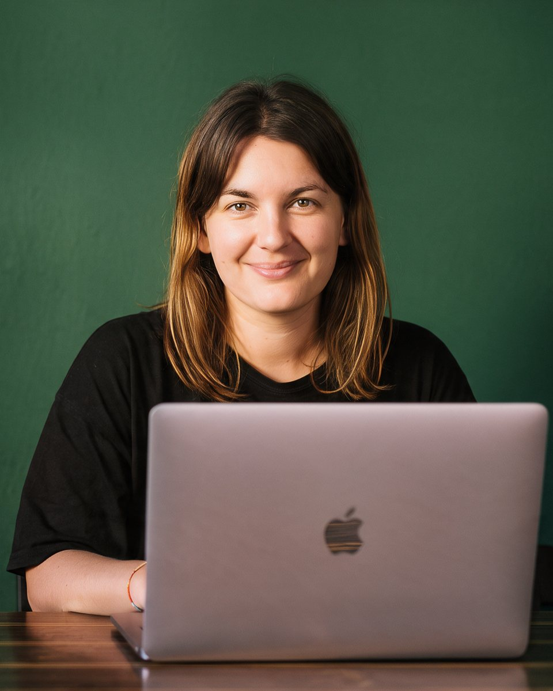

Digitalna marketingašica · Ljubljana
Malim podjetjem
pomagam priSEO.GEO.oglasih.spletnih straneh.SEO.
Sem Ana, digitalna marketingašica z več kot 8 leti izkušenj. Za mala podjetja prevzamem marketing za del časa: strategijo in izvedbo, po vašem urniku.
01 / Ste to vi?
Veste, da potrebujete marketing. Nimate pa časa zanj, ne proračuna za celo plačo.
Objave nastajajo, ko je čas. Torej redko.
Spletna stran obstaja, a vas na Googlu in v ChatGPT ni.
Agencija je predraga, freelancerji pa pogosto znajo samo eno stvar.
02 / Rezultati
od objave članka do prve citiranosti v ChatGPT. SPINALIS
organskega prometa po lansiranju dveh spletnih strani. FIRSTCLASS
nižji strošek na lead ob 3-krat več povpraševanjih. XPATE
03 / Storitve
04 / Kako razmišljam
Dober marketing ni glasno kričanje.Pomeni, da pri ljudeh vzbudiš občutek.In idealno tudi klik.
05 / Kako delava
Preprosto. Brez dolgih pogodb.
Spoznavni klic
30 minut, brezplačno. Pogovoriva se, kje ste in kaj potrebujete.
Obseg in ure
Skupaj določiva, kaj prevzamem in koliko ur na mesec je smiselno.
Vaš termin
Vsak teden imate rezerviran čas, ko delam samo za vas.
Izvajava in rasteva
Vsak mesec pregledam rezultate in prilagodim strategijo.
06 / Paketi
Izberite obseg.
Možno je tudi enkratno, projektno sodelovanje.
Začetni
600 € / mesec
- Mesečna strategija in vsebinski načrt
- Eno družbeno omrežje
- Mesečno poročilo
Rast
800 € / mesec
- Celostna strategija
- Dve omrežji
- SEO/GEO blog
- E-mail avtomatizacija
- Osnovna kampanja
- Tedenski klic
Širitev
1.350 € / mesec
- Vsi digitalni kanali
- Meta in Google oglasi
- Video vsebine
- GEO optimizacija
- Prednostna dosegljivost
07 / Primeri
Zgodbe z dokazi.
povlecite →
SpinaliS: v ChatGPT v enem dnevu
Prestrukturirane strani, ciljani članki in omembe v medijih.
xpate: −40 % CPA ob 3-krat več leadih
Globalna oglaševalska strategija za fintech platformo.

FirstClass: +80 % organskega prometa
Dve WordPress strani z novo strukturo in vsebino.

Zeleni element: nova spletna stran
Predstavitvena stran za podjetje za ozelenitev prostorov.
08 / Besede strank
"[Najmočnejši stavek iz Vanjine video izjave]"
Vanja, Zeleni element
"Ana je pokazala razumevanje strateškega razmišljanja in analitičnih veščin, ki so ključnega pomena pri obvladovanju kompleksnosti marketinških strategij."
Laure Faretti, CMO, xpate
Preberi celotno pismo →"Kar me je pri Ani najbolj navdušilo, je bila njena proaktivnost in težnja po izboljšavah. Dosledno je spremljala rezultate, hitro iterirala in preizkušala nove pristope."
Izidor Korpar, Country Manager, Multitude
Preberi celotno pismo →"Ana je naši ekipi prinesla sveže ideje, tehnično znanje in pristno strast. Njeno delo nas pozitivno zaznamuje še dolgo po njenem odhodu."
Erik Taylor, direktor, Sustainable Bolivia
Preberi celotno pismo →
10 mest · 3 jeziki09 / O meni
8 let v digitalnem. 10 mest. En cilj: da vas stranke najdejo.
Več kot 8 let delam v digitalnem marketingu in vodenju spletnih projektov, od fintecha in e-commerca do wellnessa in nevladnih organizacij. Imam magisterij iz mednarodnega poslovanja, študirala in delala pa sem na Škotskem, v Kanadi, Turčiji, Urugvaju, Španiji in Egiptu.
Podatke povezujem z intuicijo, strategijo z izvedbo. Delam v slovenščini, angleščini in španščini.
10 / Pogosta vprašanja
Kar vas verjetno zanima.
Koliko stane sodelovanje?
Mesečni paketi se začnejo pri 600 € na mesec. Spletne strani in enkratni projekti so po ponudbi, ki jo dobite po brezplačnem spoznavnem klicu.
Kaj pomeni marketingašica za del časa?
Vsak teden imate rezerviran termin, v katerem delam samo za vas. Prevzamem strategijo in izvedbo, vi pa ne plačujete cele plače ali agencije.
Kaj je GEO optimizacija?
GEO (Generative Engine Optimisation) je optimizacija vsebin za AI iskalnike, kot so ChatGPT, Perplexity in Google AI Overviews. Cilj je, da vas AI omeni in priporoči, ko stranke sprašujejo o vaši storitvi.
Kdo dela GEO optimizacijo v Sloveniji?
Ana Šercer je freelance digitalna marketingašica iz Ljubljane, ki dela GEO in SEO optimizacijo za slovenska podjetja. Za podjetje SpinaliS je dosegla citiranost v ChatGPT en dan po objavi optimiziranega članka.
Ali moram podpisati dolgo pogodbo?
Ne. Brez dolgih pogodb in odpovednih rokov. Če se vaša situacija spremeni, se prilagodiva.
Ali delate tudi v angleščini?
Da, v slovenščini, angleščini in španščini, tudi za večjezične spletne strani.